FleetDeck · 多智能体指挥台
一个人的 AI 公司
用中文语音指挥一支 AI 团队。
一句话派活,主管自己拆解、分派、回收执;多个角色并行干活,进度开口就问。它管的不是聊天窗口,是一支跑在你项目文件上的真实团队。
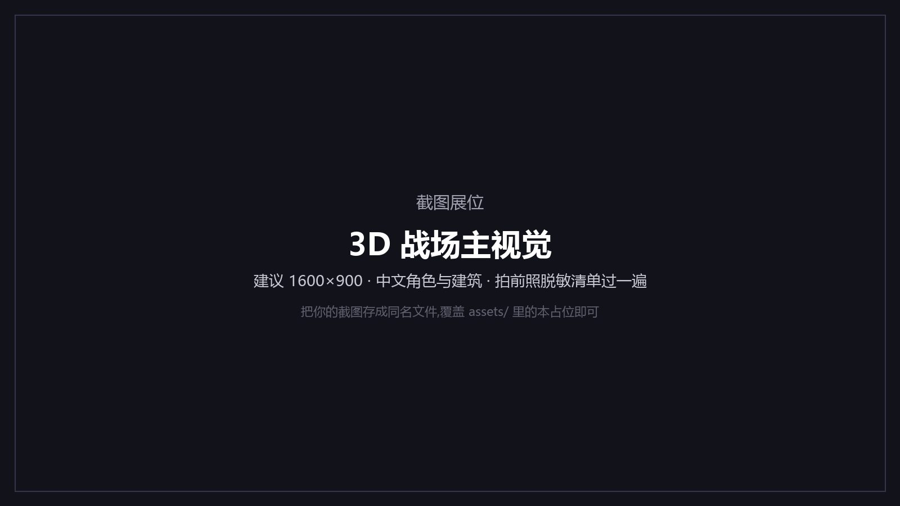
基于 Tide Commander(作者 deivid11,MIT 许可)二次开发。
Tide Commander 是一个面向多 AI 编码代理的可视化编排与操作台——它把 Claude Code、Codex、OpenCode、Grok、Pi 这些命令行编码代理,注册成"有位置、有归属、有上下级"的实体,并在同一个界面里完成文件浏览、Git、终端、数据库、测试等操作。
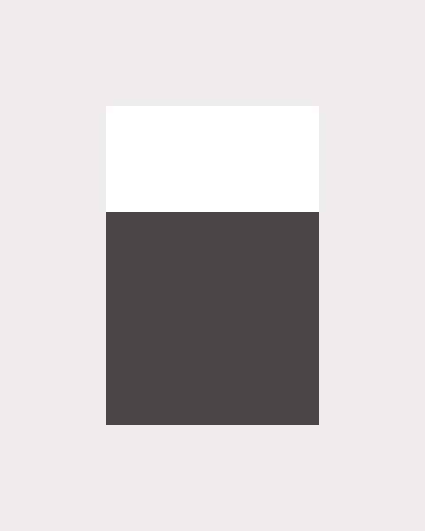
OpenCode Grok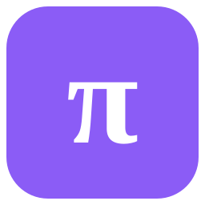
PiFleetDeck 基于它深度改造:上游引擎 + 本地组织层与交互层。定位收窄为三个词——中文、语音优先、组织导向:写给在中文环境里"一个人当一支队伍使"的人。
它不是新的 AI 编码器。它指挥你已经装好的 CLI 编码代理——每一个角色,都是跑在你项目文件上的真实进程:真工具、真凭据、真会话历史。
不看演示稿,看两个有据可查的场景——数字全部来自本机实测记录。
实测:清会话后的首考,全链 42.7 秒闭环(全历史首次)。语音侧:提交到首句出声 3.9 秒,播完回到聆听 7.7 秒。
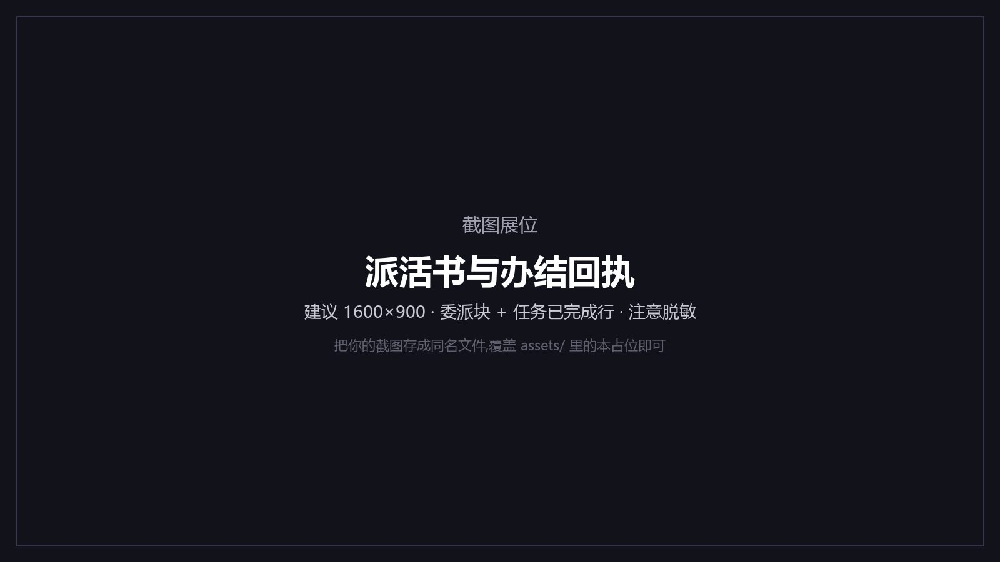
语音伙伴从"一轮一启动"改为常驻进程——冷启动一轮 16.6 秒 → 热轮 2.1 秒(≈8 倍,省 87%)。隔离沙箱 6+6 轮真实对话,12/12 全绿。
聊久了会变慢(实测退化到 74.4 秒 量级)。加入自动轮换 + 交接笔记(轮换时把"刚才说到哪"交班)后,p50 回落到 3.4 秒(≈21.9 倍)。如实说明:46 秒的长尾仍然存在,已登记在案、不做粉饰。
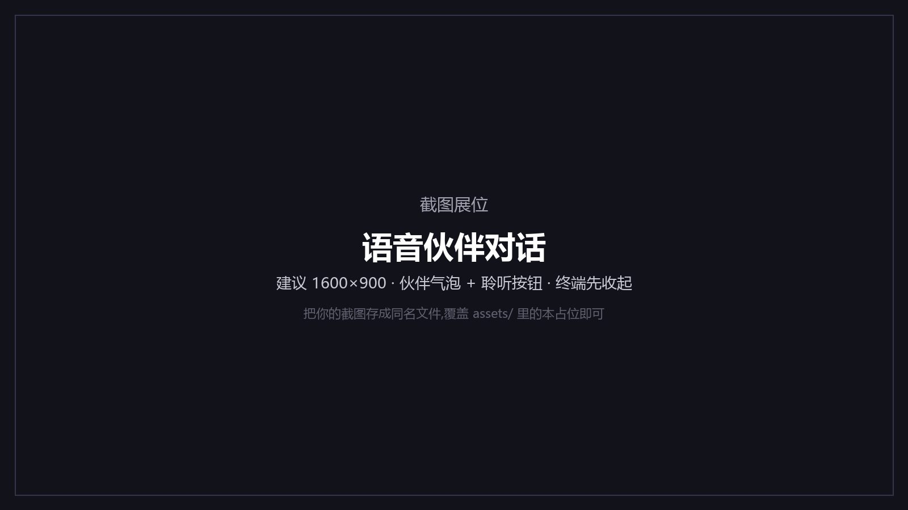
3D / 2D / 仪表盘 / 平铺四种视图,外加指挥官视图(多终端网格)、Guake 终端、全局搜索;角色可点选、拖动、右键派令,可划区域做"作战地盘"。
服务器(PM2 托管)、Docker 编排、数据库连接、Web 终端(ttyd + tmux 持久会话)、测试浏览器(Maven / Vitest / PHPUnit 等)、HTTP 请求集(IntelliJ 风格 .http)、指挥中心(批量控制下属)、文件夹、链接、斜杠命令。
多根文件树、内嵌代码编辑器、diff / 历史 / 分支对比。
MySQL / PostgreSQL / Oracle / SQLite / SQL Server 五引擎,可选 SSH 隧道,schema 浏览 + 查询历史。
docx / xlsx / PDF / 音视频,STL / GLB / FreeCAD / G-code 直接看。
内置技能(通知、记忆、委派回执、Git、数据库、浏览器控制等)、插件、八类外部触发器(Webhook / 邮件 / Slack / Jira / 定时 / WhatsApp / 微信 ClawBot / Bitbucket)、状态机工作流编辑器。
让 agent 观察并驱动你已登录的真实浏览器;每个标签页开关默认关闭,开启后页面注入徽章提示,可设 origin 白名单。
手机浏览器接上局域网,出门也能指挥。
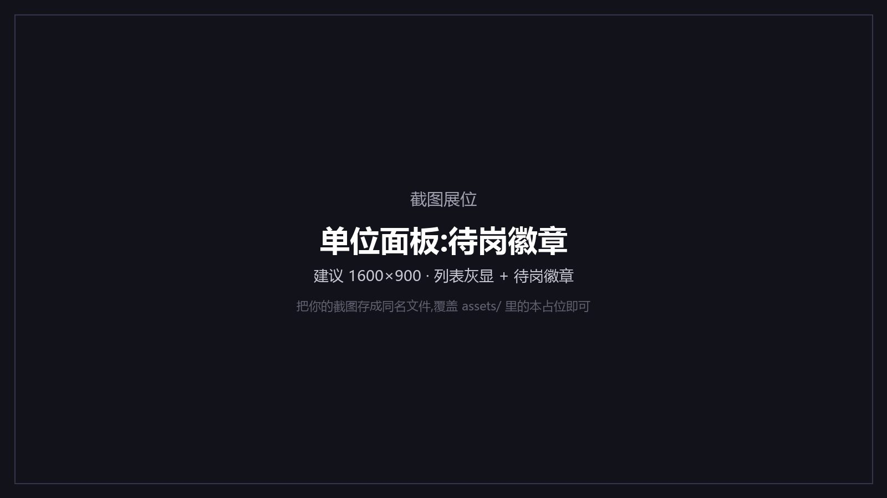
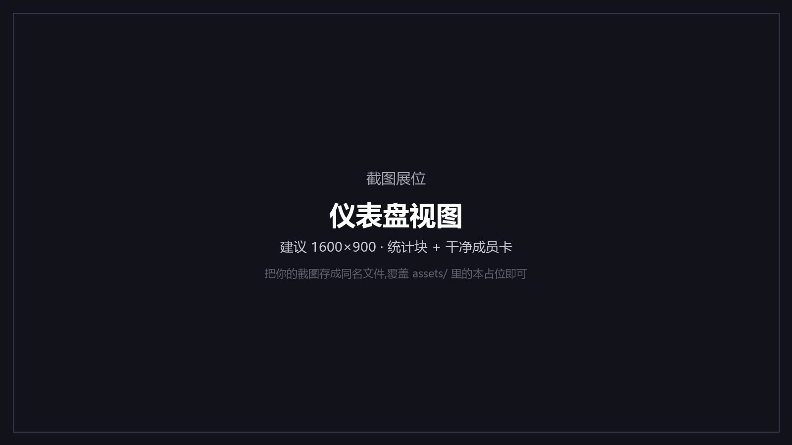
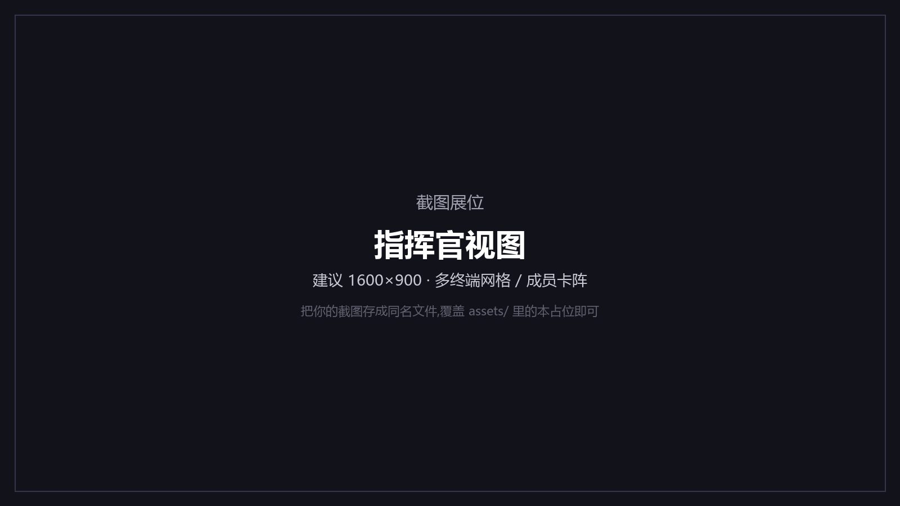
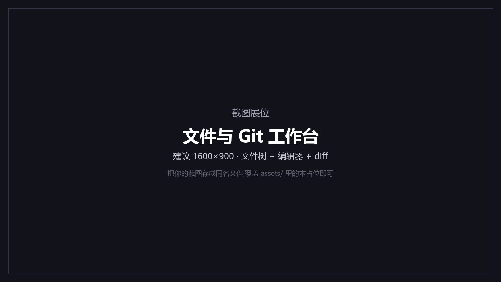
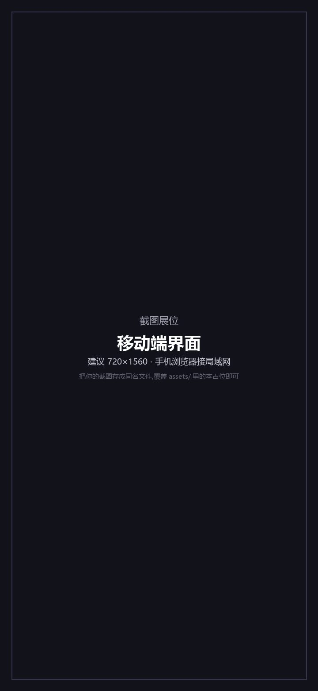
3D 场景已经是一个完整的"战场"——昼夜四时段自动切换,角色大小、动画、模型材质可调,角色与建筑都能点选、拖拽、指挥。
8 个办公白领角色已程序化生成——骨架、体量、材质与现有角色逐项对齐,还带一段自制的"伏案打字"动画——但尚未接入界面;办公室环境改造方向已定、待实施。
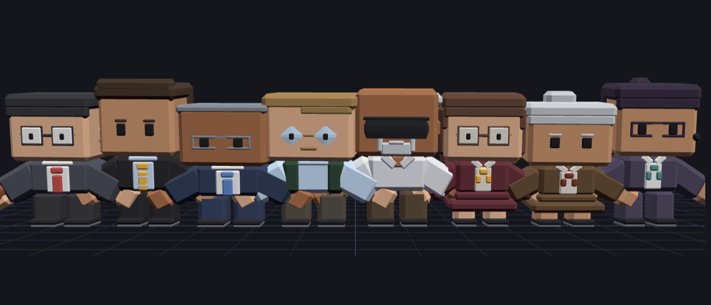
它们已经做好了,只是还没搬进办公室——所以我们把它放在路线图里,而不是截图里。
均为本机开发记录(2026-10 实测);非实验室理想值,未做跨机器验证。
FleetDeck = 基于 Tide Commander 深度改造的多智能体指挥台:上游引擎(可视化多代理编排)+ 本地组织层与交互层(中文全量、语音全链、组织治理、办公室方向)。
基于 Tide Commander(作者 deivid11,MIT 许可)二次开发;与上游官方无隶属关系。感谢上游作者与社区。
仓库与联系:github.com/kai-gq/AI-FleetDeck(Issue 即联系方式)。